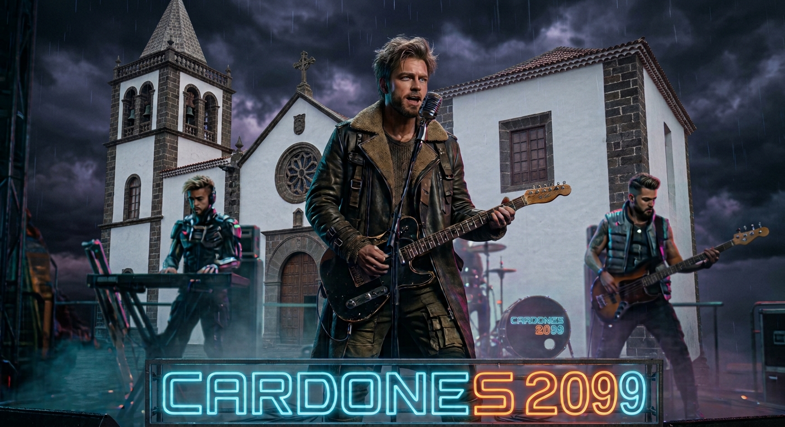

Cromo y Barro
Grupo que fusiona la música tradicional con sintetizadores

Conéctate a la Red. Enciende el Bluetooth. Siente la tierra
Localidad y fecha: Cardones (Arucas), 26 de noviembre de 2026
Objetivos del festival: Promover la música futurista y la cultura digital accesible en el municipio de Arucas
Grupo que fusiona la música tradicional con sintetizadores

Sesión de música electrónica con drones

Aprende a construir instrumentos autóctonos con electrónica reciclada.